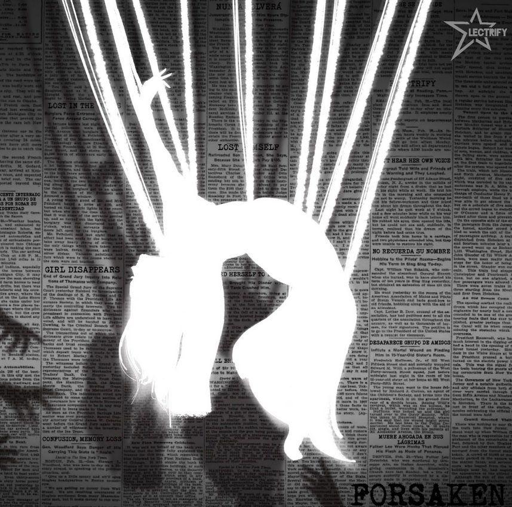
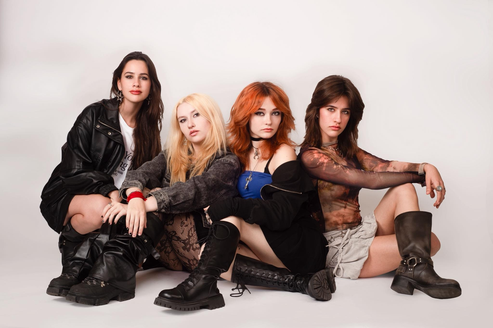

ELECTRIFY:
EL PRECIO DE LA AUTENTICIDAD

La escena del nuevo rock mexicano suma un nuevo e importante capítulo. Electrify continúa consolidando su paso firme en la industria nacional con el lanzamiento de "Forsaken", un sencillo directo que se desprende de las convencionalidades para abordar una de las batallas humanas más complejas: mantenerse fiel a la esencia propia.
NARRATIVA DESDE LA VULNERABILIDAD
Tras el éxito cosechado con temas como ‘Drive’, ‘Fake’, ‘Timeless’ y ‘Mercy’, la banda da un salto evolutivo en su identidad sonora. En esta ocasión, el grupo deja de lado las barreras y se adentra en una lírica profundamente introspectiva que nace desde la vulnerabilidad absoluta.
EL ORIGEN: DISOCIACIÓN Y RESCATE
Lejos de la ficción, la composición de "Forsaken" encuentra sus raíces en una vivencia personal real y densa de los integrantes. La canción explora sin filtros esa dolorosa sensación de perder el rumbo y desdibujar la identidad propia para cumplir con expectativas ajenas.
INTEL DE PRODUCCIÓN: FORSAKEN
- SINGLE: #5 en la cronología oficial
- TEMÁTICA: Salud mental y disociación
- ANTERIORES: Drive, Fake, Timeless, Mercy
- MENSAJE: Elegirse a uno mismo antes de que sea tarde

UNA ALARMA SOCIAL
Con esta declaración, el grupo deja en claro que el sencillo no solo busca conectar con su audiencia a través de la empatía emocional, sino que también funciona como una potente alarma social sobre el alto costo mental y emocional que conlleva traicionarse a uno mismo para encajar en el entorno.